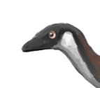
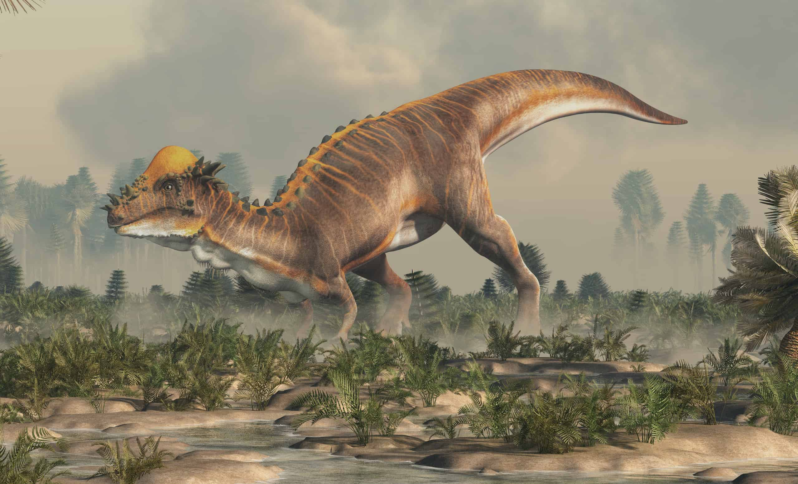
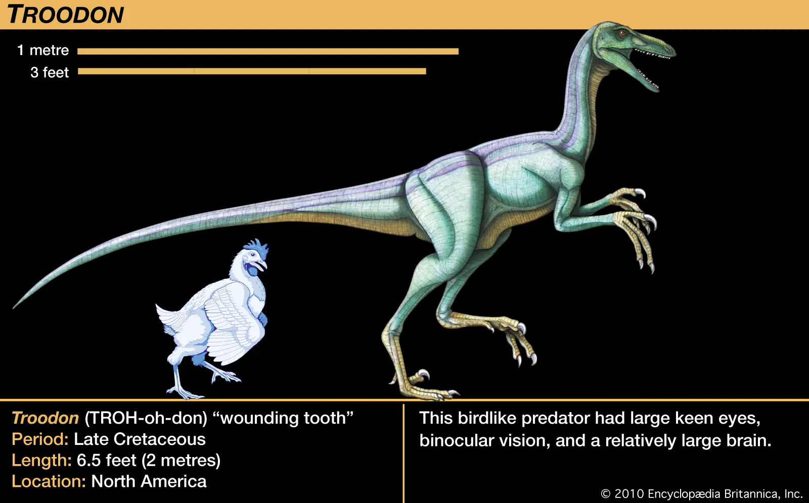
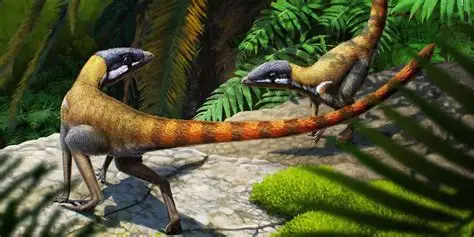
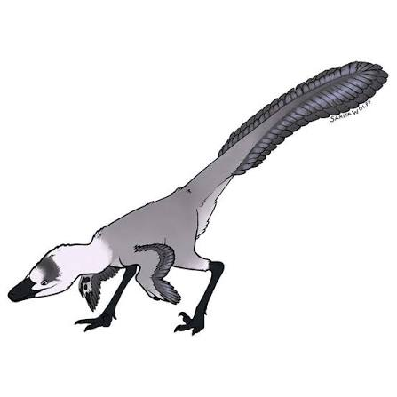
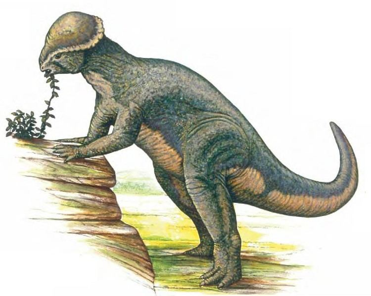
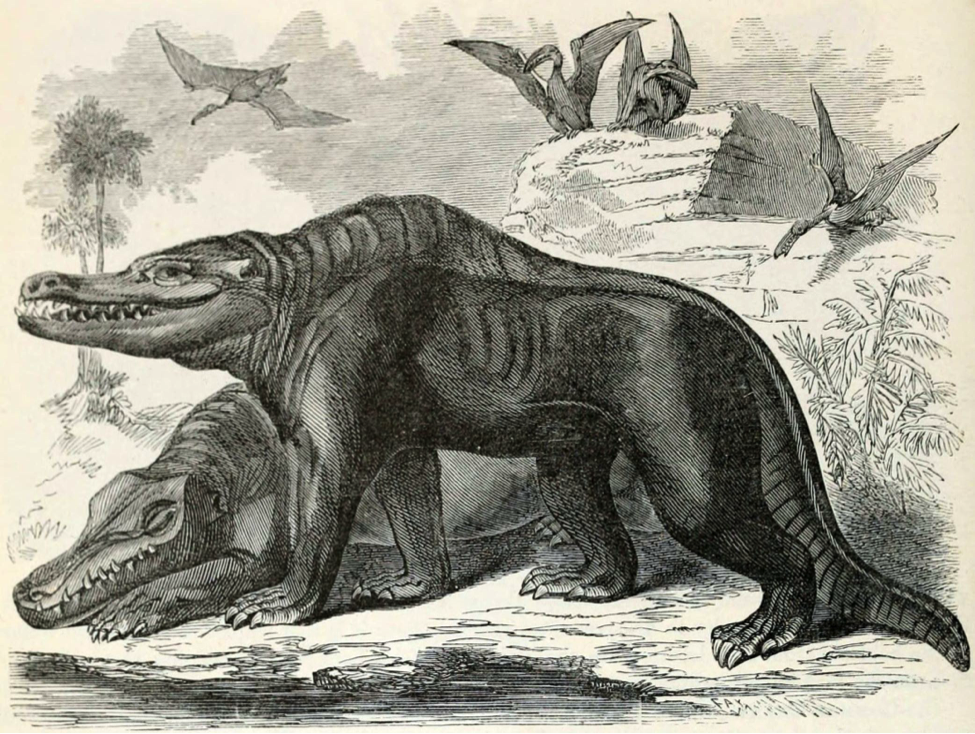
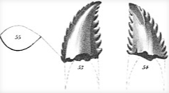

Last update: 11th september 2026
Made by Sean

This is a website to adress the chaos around the dinosaur species troodon. It has been shuffled around constantly between different classes. It contains new information and will be updated.
No picture
Polyodontosaurus was determined to be a nomen dubium, not fit for synonymy with other taxa. (1951)
No picture
Sternberg thought Polydontosaurus grandis could be the same dinosaur as Troodon, since Stenonychosaurus had a "very peculiar pes" and Troodon "equally unusual teeth", they may be closely related, but no comparable specimens were available at that time to test the idea. (1951)

Since the name "troodon" was no longer valid for the dome-headed dinosaurs following it's reclassification, they were renamed pachycephalosaurs. (1945)

Charles Mortram Sternberg rejected the possibility that Troodon was a pachycephalosaur thanks to its stronger similarity to the teeth of other carnivorous dinosaurs. (1945)

Another specimen discovered in the dinosaur park formation of alberta was named Polydontosaurus by Sternberg based on a a partial lower jaw bone. (1932)

One specimen discovered in the dinosaur park formation of alberta was named Stenonychosaurus by Sternberg based on a foot, fragments of a hand, and some tail vertebrae. Sternberg initially classified Stenonychosaurus as a member of the family Coeluridae, meat eating dinosaurs. (1932)

troodon was classified as an older stegoceras by Gilmore, who noticed the similarities between stegoceros teeth and the teeth of troodon (1924)

troodon was classified as a megalosauroid by Franz Nopcsa von Felső-Szilvás, "megalosauroid" being a "wastebin" for dinosaurs.(1901)
No picture
troodon was classified as a lizard by Joseph leidy. (1856)

Was given the name "Troödon formosus" (Latin: Wounding tooth), discovered from a single tooth found in the Judith River Formation.(1856)